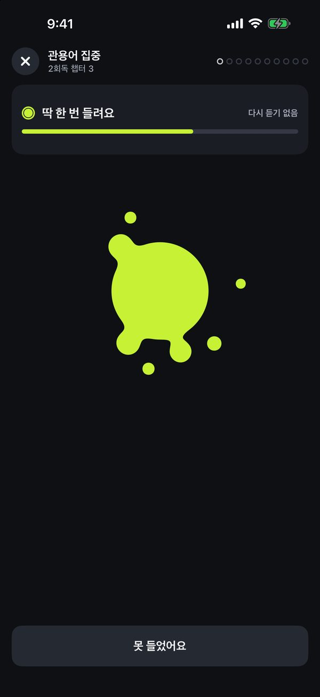
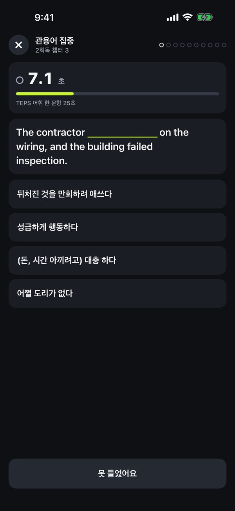
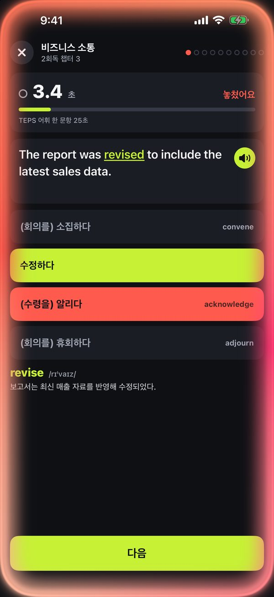
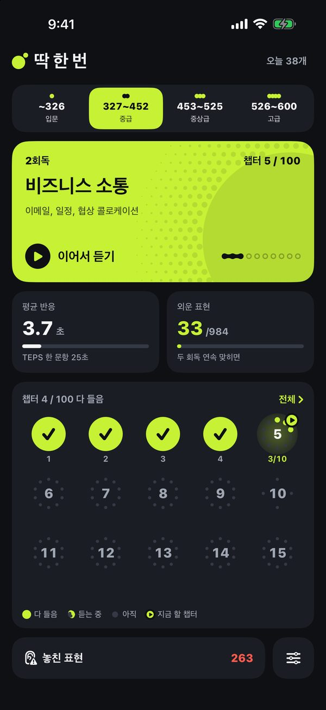
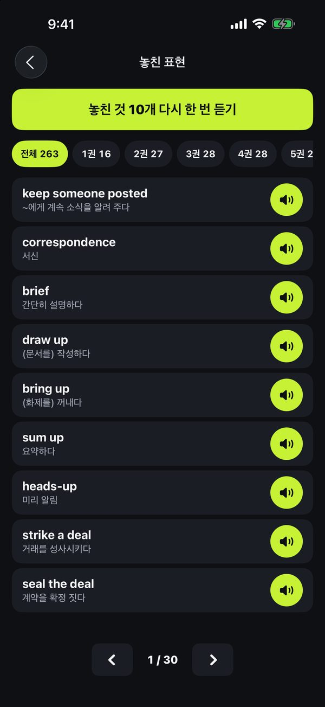

TEPS는
한 번만 들려준다
TEPS 청해는 모든 문장을 한 번만 들려주고, 선택지도 소리로만 나옵니다. 딱 한 번은 예문을 한 번 듣고 빈칸에 들린 표현의 뜻을 고르는 어휘 회독이에요. 초시계는 한 문항 25초와 겨룹니다.
App Store에서 받기iPhone, iOS 18 이상. 공부한 날 기준 처음 7일은 모두 무료예요.
이렇게 들어요
문장을 딱 한 번
카드가 열리면 예문이 한 번 자동으로 나옵니다. 화면에 글자는 없고, 다시 듣기는 답한 뒤에만 열려요.
들린 표현의 뜻을 골라요
소리가 끝나면 핵심 표현이 빠진 문장과 뜻 네 개가 나타나고, 초시계가 25초와 겨룹니다.
맞히면 바로 다음
틀리면 표현, 발음, 번역과 함께 고른 뜻이 어떤 표현이었는지 알려 줘요.
놓친 것만 다시 한 번
틀리거나 못 들은 표현을 모아 10개씩 다시 듣고, 두 회독 연속 맞히면 외운 표현이 됩니다.
화면





점수대 네 단계, 40권
일상 대화, 비즈니스 콜로케이션, 구동사 집중, 고급 관용어와 속담까지 3,943개 표현.
구독
그 뒤 하루 20문제
처음 7일은 공부한 날 기준으로 셉니다. 구독은 기간이 끝나기 24시간 전까지 해지하지 않으면 자동으로 갱신되며, App Store 계정 설정에서 해지할 수 있어요. 가격은 대한민국 App Store 기준입니다.
자주 묻는 질문
소리를 못 들었으면요?
"못 들었어요"를 누르면 놓친 표현으로 모이고, 답을 확인한 뒤에는 몇 번이고 다시 들을 수 있어요. 무음 모드에서도 소리가 나요.
음성은 사람이 녹음했나요?
아니요. AI 음성 모델로 미리 만들어 담은 자연스러운 음성이에요. 음성이 없는 문장은 기기 음성이 읽습니다.
인터넷이 필요한가요?
아니요. 예문, 뜻, 음성이 모두 앱 안에 있어요. 가입, 로그인, 광고도 없습니다. 기록은 내 기기와 내 iCloud에만 저장돼요.
실제 시험 문제인가요?
아니요. 시험의 듣기와 어휘 문항을 참고한 연습용 카드예요.